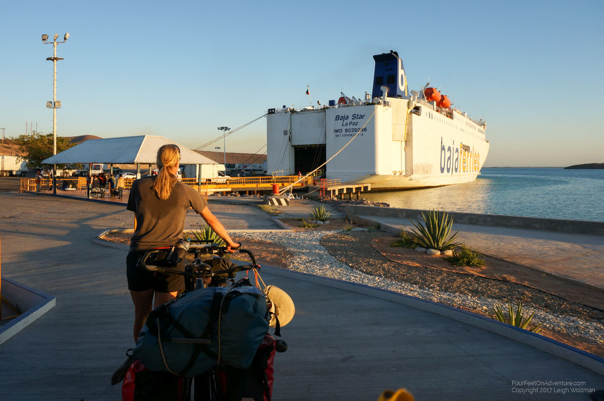
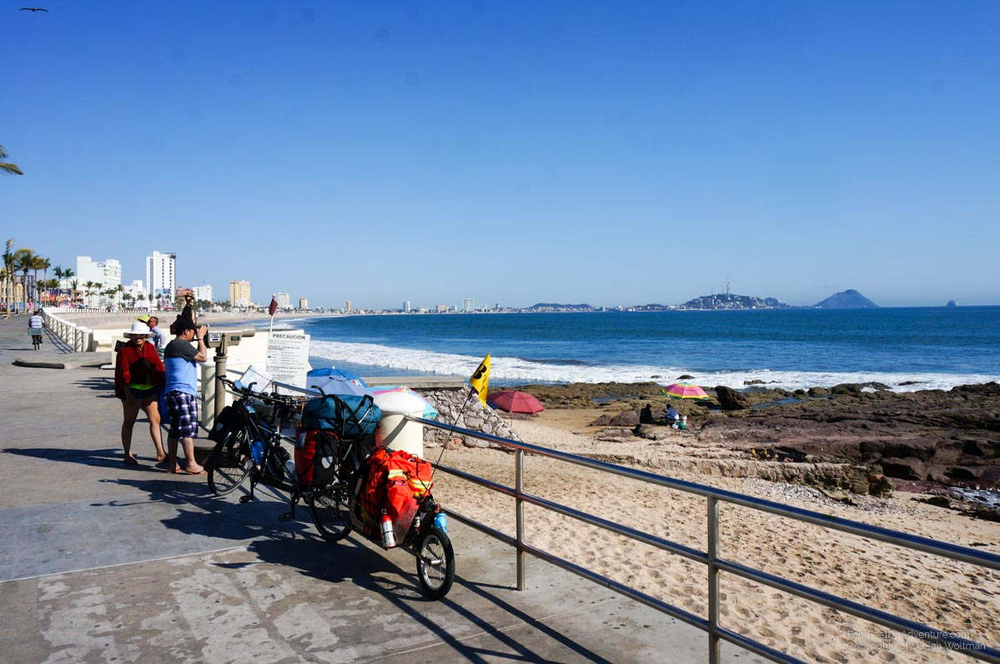
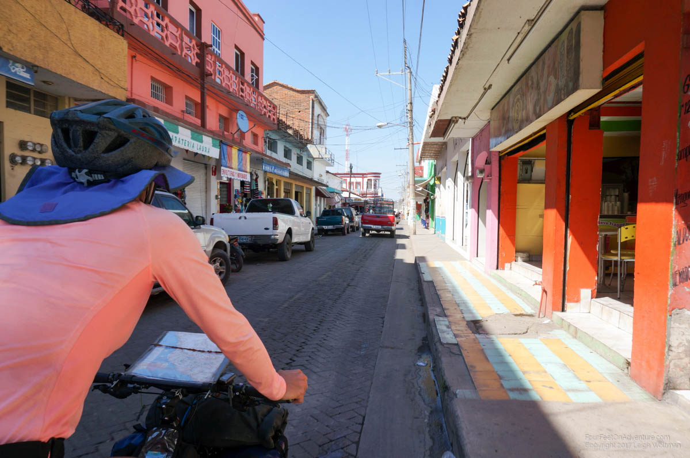
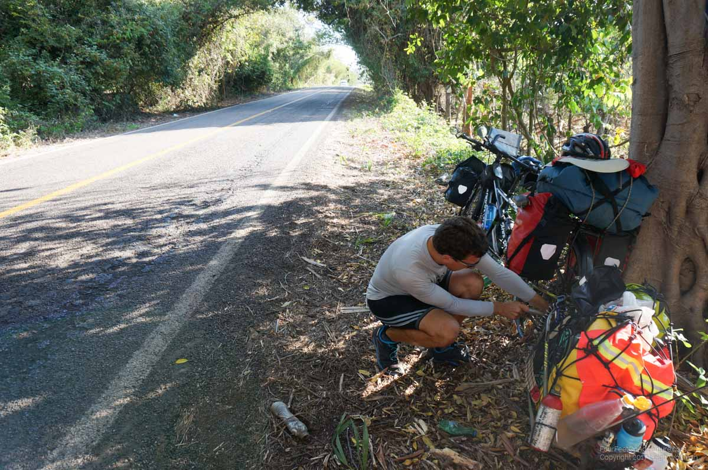
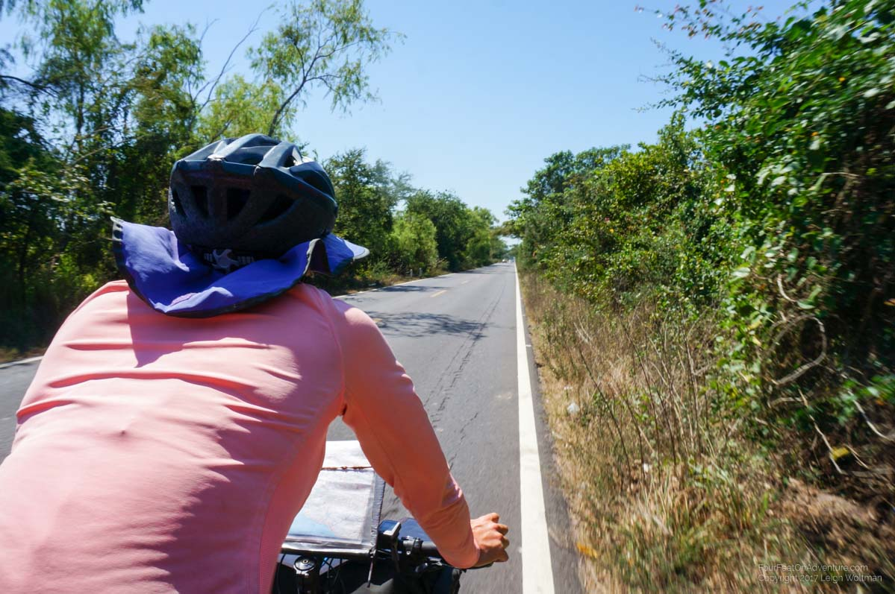
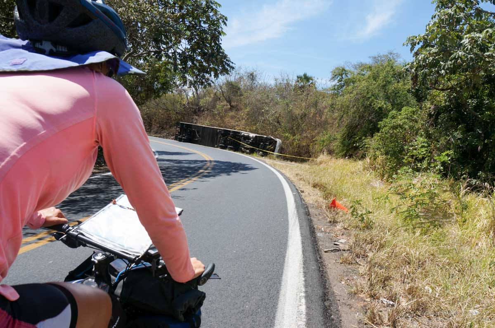

Email Us
Please send us an email, we would love to hear from you!

We left Mazatlan and our last update with a short pedal to the next village about 30 km away. I forgot to mention that when we arrived off the ferry we were in need of breakfast. The Lonely Planet suggested one spot but when we got there it was closed.As we were waiting to turn the corner to get us towards the main waterfront drive, a friendly English voice inquired where we were coming from. He quickly wanted to know more and we explained we were looking for breakfast. Kurt is a retired Oregonian and shows us down three doors to a very American looking cafe. It is busy and lots of people are ordering breakfast. He says he knows the owners and helps us find a seat. As we wait for our breakfast he is eager to know more about our journey and we explain that we are likely going to try some pharmacies in town to see if we can buy another EpiPen. He is so eager to help that he gives us directions to all the major shopping areas and then leaves for several minutes to make some phone calls. He returns and is unsuccessful in finding information about EpiPens, but offers any other help he can give. We say we will be fine with all the directions he has given us and he waves us off, returning to wait for his wife’s haircut to be complete.

The waterfront of Mazatlan is all closed down to traffic as they are setting up for an international triathlon tomorrow, and a kids race today as we find out later. We get to ride down the main waterfront drive without a hint of traffic and even though we have several kilometers to head out of the direction to check out pharmacies the cycling is easy and relaxed, though we have to make way for the kids triathletes, who are in the middle of their water part as we cycle past the area where they will change to cycling in a couple of minutes.

Eventually we leave town and head to the highway to get to the next town. Upon arriving we first looked for a main grocery store but after pedaling around the square blocks in the most densely populated part of town, we only found some small convenience stores. There we pick up some cereal and milk for tomorrow's breakfast. We had typically been cooking oatmeal but find that groceries are fairly inexpensive here, and we get going much faster in the morning with a cold breakfast. It eliminates starting, stopping and stowing the stove along with cleaning pots. In this town we find also a fairly reasonable hotel. Since we eat a lot of the same food and eating out options for Annette are often limited because she is vegetarian, we prefer to make dinner ourselves. In this town, google Maps suggested there was both a Burger King and Subway but neither lined this street. Instead, we found a much larger grocery store and decided to cook in our hotel room. It was a nice dinner and settled Leighs stomach which was not happy since Mazatlan. This was due to us passing a McDonald’s and Leigh deciding the need for a cheeseburger. The decision was quickly regretted as it sat like a fat grease ball in his stomach for the rest of the day.
The next day we set our sights on another town. The scenery is much more green on the mainland compared to Baja and occasionally we see an Iguana looking creature scamper away, never pausing long enough for us to get a good look. We pedaled the free highway number 15. In Mexico, there are lots of dual routes consisting of a free highway and a toll highway. The toll highway seems to be newer and straighter but we don’t believe we are officially allowed to bike on them. We’ve heard reports that bicycling on them is possible and we may try at some point, but for now the free roads seem fine, though the couple of times the 15 has merged for a few kilometers with the toll 15D we have noticed the toll highway has nice wide shoulders. Our free highway today has some rolling hills but is generally flat. Halfway through the day we get to a large town and exit from the highway to find some cold refreshments. We notice it is starting to feel quite hot so some refrigerated drinks make a huge difference. We find the main grocery store (Bodega) which although is fully Spanish looking and named is actually owned by Walmart evidenced by their payment terminals. We roll to the church in the middle of town and have lunch under the shade of a tree lining the church square. The inside of this church was supposed to be quite impressive but it didn’t look open today. We continue on towards the next town where we will stop.
We arrive and find an affordable hotel right across from the Walmart grocery and after guzzling several drinks, Annette heads off to find a pizza for dinner. She returns with a pizza which is just edible. Leighs meat side includes slices of hot dogs! Yuck.
The next day we head off to the next town. The heat is getting hot by later morning. We shelter under a highway bus stop for some shade over lunch. After an hour of rest we step back into the sun, it is now solar noon and the heat is intense. We can feel waves of it wafting up from the pavement. Later we find out the high of the day was 36 degrees Celsius!

Just before Acaponeta we pull over for a drink and let several trucks pass before heading back onto the highway. We start cycling again and a municipal police officer passes. Moments later, he comes back into view driving backwards down the opposite lane. Behind us again, he turns his roof lights on. We wait several seconds and then decide I guess we should pull over. We turn but he quickly signals for us to keep going. We cycle on, with our newly found police escort right behind us, lights flashing. Once we get around the corner and over a narrow bridge, he speeds off, giving a friendly wave.
In Acaponeta, we find the first hotel, it is 520 pesos. It looks nice, and we almost always take the first hotel we find, this time we continue on. The next hotel is 400 pesos. Not bad, we continue on, the next one is closed. But a street vendor signals there is another hotel 4 blocks down. We head there, 280 pesos and it looks alright. This works! Maybe we won’t always take the first hotel in the future.
Unpacking, we find the tablet is too hot to touch. It appears to have gotten turned on in the luggage during the day and drained its entire battery which means a lot of heat being pumped into its neoprene insulating case. It all sorts itself out after cooling and charging for a while, but it is a reminder to be a little more diligent with backups. Likewise, the hot sun from today has made us conclude that we need to get up earlier, to try and cycle in the cooler mornings.

The next morning we are on the road by 6:30, pretty good since our usual departure time is 10 AM and an early departure is 9 AM! We have a flat day today but we are going to try and make it a long one. We have a large hill coming and the closer we can get, the better. Before 10 AM, we are halfway through our day which is a nice feeling. We are also beating some of the heat but our long distance eventually means we finish the ride in the heat of the day. A hotel with air conditioning is a welcome relief when it comes.

This stop was out of the way, about 8 kilometers from the highway, but after getting there we decide we can take a back road and catch up with the main route later. Our morning ride is quite different than the day before, the highway is paved but quiet. We pass lots of tobacco plantations and mango orchards. But eventually, it comes time to pay the day's dues. By 9 AM we are halfway through our daily distance, but the target of the day, Tepic, lies 970 metres in elevation above us, and given there are ups and downs, Google reports we have over 1400 metres of climbing ahead of us. Our previously daily record was around 750 metres. We slowly grind up. At a highway junction, Federal police are posted guarding the highway. We wave to show we are no harm and we stop to buy a drink from a roadside vendor. One of the officers walks over and speaks English. He asks us about our trip, obviously genuinely interested. When the lady responds with the price of a drink, we question whether she said thirteen or thirty in Spanish. He confirms thirty and we pay, she brings back change as it was only thirteen. It is hard to learn Spanish numbers when even the native speakers can’t understand them! It is weird to be having a conversation with a man wearing full riot gear and has an automatic assault rifle hanging from this neck, but he is friendly. :)
Up, up and up. The day never seems to end. Our climb drags into the afternoon, and we wish we didn’t have so much weight on the bike. Those warm sleeping bags, raincoats, jackets.... We use the phone’s GPS to tell our elevation and we get excited to hit 560 metres, to only have a downhill where we lose about 100 metres elevation. When we regain this 100 metres, we are unenthused when another downhill causes us to lose it all again. Okay, up and up, please no more downs we hope. Only on a day like today would we wish for no downhills. The highway is crowded by trees which occasionally provide a little shade on the roadway as a welcome respite.
On the way up, we pass a semi-tractor trailer which has taken a corner too fast and flipped over. Even though we are a kilometer from a town that even then only had 5 houses, there are 30 people all standing around with no vehicles to have presumably got them there.

Eventually, we roll in to Tepic and spend some time hunting for a hotel. We find one, and a Pizza Hut for dinner. Sure, we’ll take your biggest pizza, which even though the open box is the size of the four person table, we consume it all.
Please send us an email, we would love to hear from you!